네이버톡톡과 LINE 연동
네이버톡톡과 LINE을 연동하면 Clova Chatbot으로 사용자와 대화할 때 Clova 서비스를 사용하지 않고 네이버톡톡과 LINE으로 대화할 수 있습니다.
네이버톡톡 연동
네이버톡톡과 연동하는 방법은 다음과 같습니다.
네이버톡톡 계정 생성
네이버톡톡과 Clova Chatbot을 연동하려면 네이버톡톡 계정이 있어야 합니다. 네이버톡톡 계정을 생성하는 방법은 다음과 같습니다.
- 네이버톡톡 파트너센터에 네이버 아이디로 로그인합니다.
- 네이버톡톡 파트너센터에서 시작하기를 클릭합니다.
- 약관 동의와 휴대폰 인증을 완료한 다음 톡톡 계정 만들기를 클릭합니다.
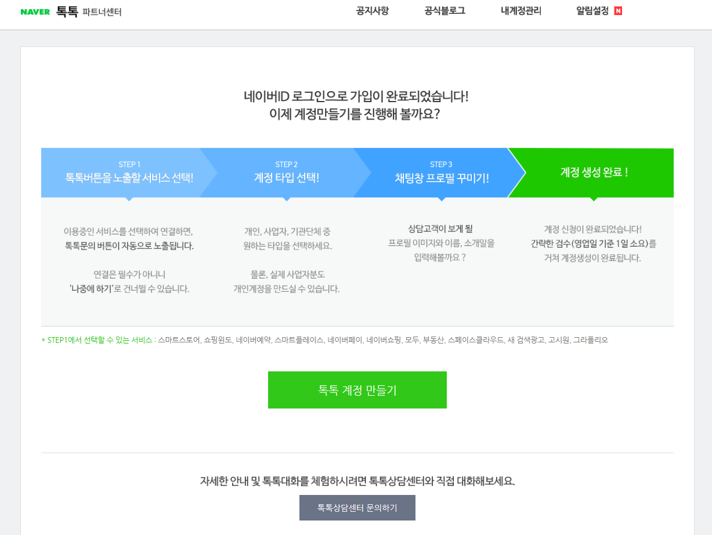 - 톡톡 계정 만들기에서 연결할 서비스를 선택하고 필요한 정보를 입력합니다. 프로필명을 입력할 때
[테스트]를 프로필명 앞에 넣으면 톡톡 가맹점 찾기에서 제외되는 테스트 계정을 생성할 수 있습니다.
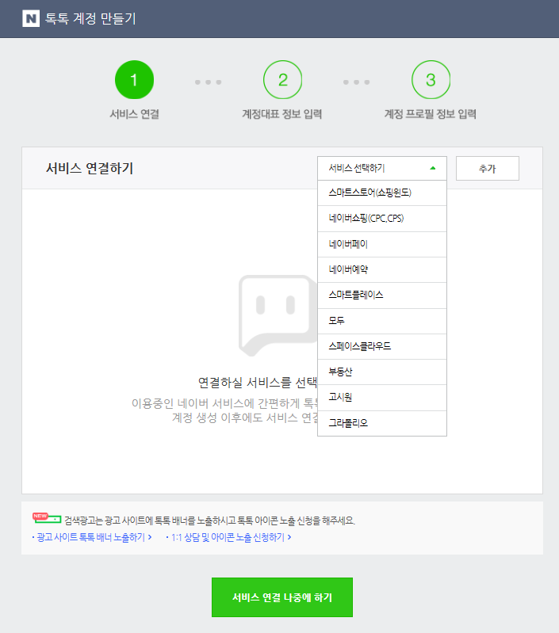 - 계정을 생성한 다음 검수가 완료되면 네이버톡톡 계정을 사용할 수 있습니다.
Clova Chatbot 연동
네이버톡톡 계정 검수가 끝나면 다음과 같이 네이버톡톡 계정을 Clova Chatbot과 연동합니다.
- 네이버톡톡 파트너센터에 로그인합니다.
- 네이버톡톡 파트너센터에서 내 계정관리
- 계정관리 홈에서 챗봇 API > API 설정을 클릭합니다.
- 약관 동의 후 설정 페이지가 나타나면 보내기 API Authorization 생성을 클릭합니다.
- Webhook 메뉴에 네이버 클라우드 플랫폼의 API Gateway에서 만든 경로(예:
https://kaa.clova.ai/chatbot/webhook/talktalk?code=ai.clova.extension.test)를 입력한 다음 등록을 클릭합니다. - 이벤트 선택 > 이벤트 변경 메뉴를 클릭한 다음 send로 설정됐는지 확인합니다.
- 보내기 API 메뉴 있는 Access Token 값을 복사해 기록합니다.
- Clova Chatbot 창의 메뉴에서 설정을 클릭합니다.
- 설정 화면에서 채널 탭을 클릭합니다.
- 채널 연동에서 네이버톡톡에 있는 설정을 클릭합니다.
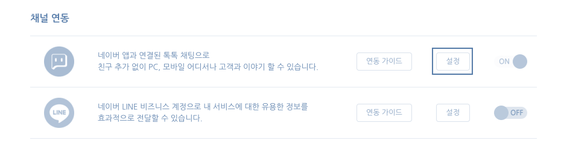 - 설정 대화 상자에서 Access Token에 기록해 둔 Access Token 값을 입력합니다.
- 저장을 클릭해 설정 내용을 적용합니다.
- 네이버톡톡 연동을 사용하려면 네이버톡톡의 ON/OFF 상태를 ON으로 설정하고 저장을 클릭해 설정 내용을 적용합니다.
LINE 연동
LINE과 연동하는 방법은 다음과 같습니다.
LINE 계정 생성
LINE과 Clova Chatbot을 연동하려면 LINE 계정이 있어야 합니다. LINE 계정을 생성하는 방법은 다음과 같습니다.
- LINE Business Center에 접속하여 계정을 생성합니다.
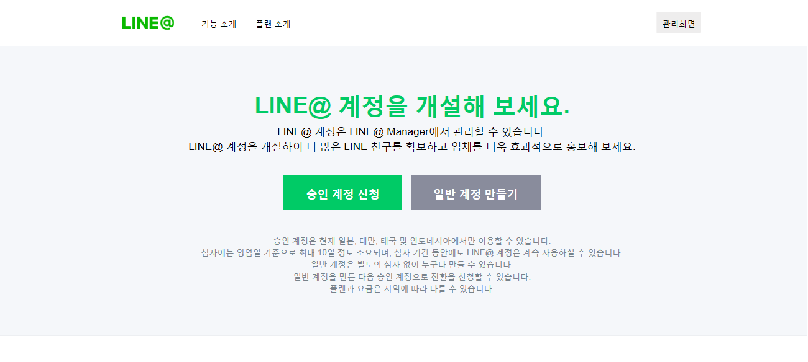 - 계정 정보를 입력해 계정 생성을 신청합니다.
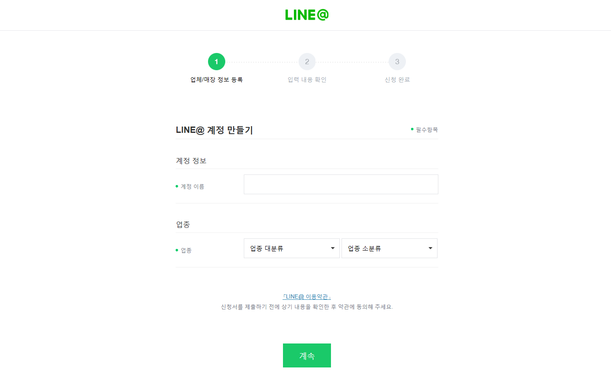 - 계정 생성이 완료되면 LINE@ Manager에 로그인을 클릭해 LINE@ Manager로 이동합니다.
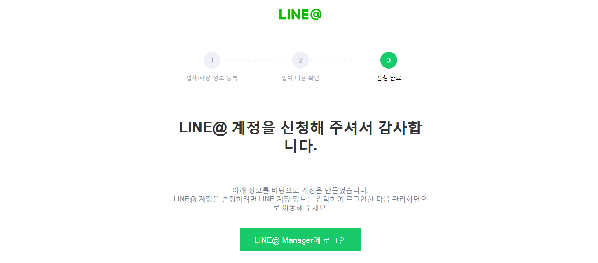
Clova Chatbot 연동
LINE 계정 생성이 끝나면 다음과 같이 LINE 계정을 Clova Chatbot과 연동합니다.
- LINE Business Center에 접속해 관리화면을 클릭합니다.
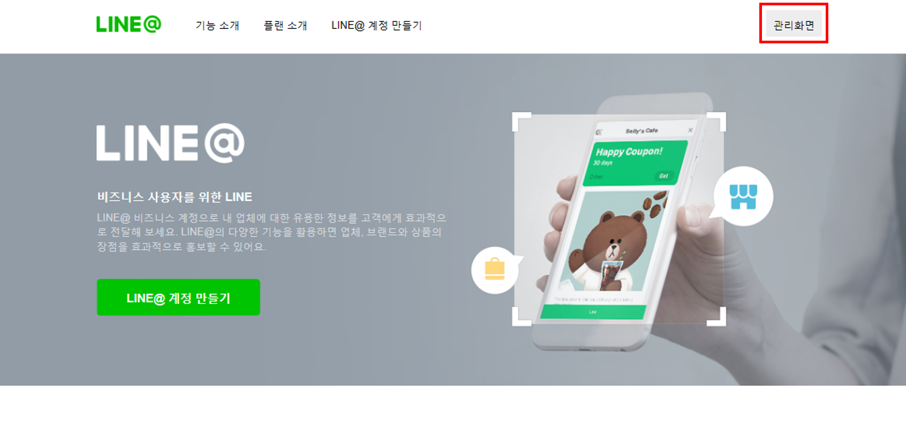 - LINE@ Manager에서 계정 설정 > Messaging API 설정을 클릭한 다음 API 켜기를 클릭해 API를 실행합니다.
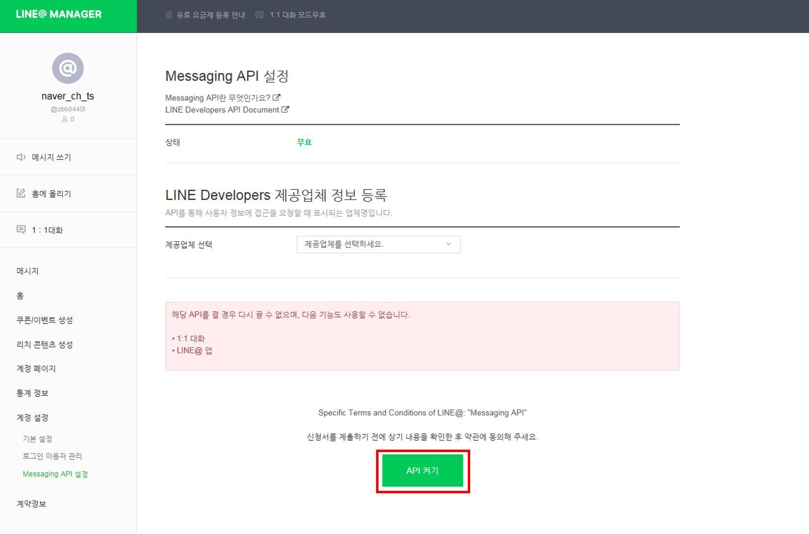 - LINE Developers를 클릭합니다.
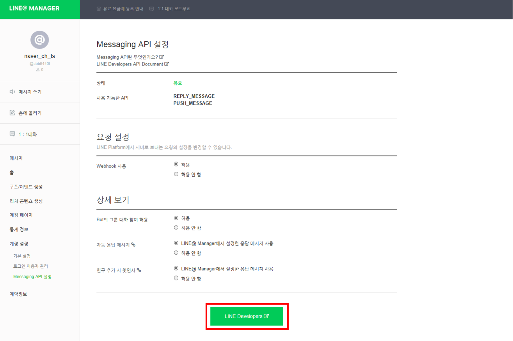 - LINE Developers의 Channel settings 화면에서 Channel ID의 값과 Channel secret의 값, Channel access token의 값을 확인하고 복사해 기록합니다.
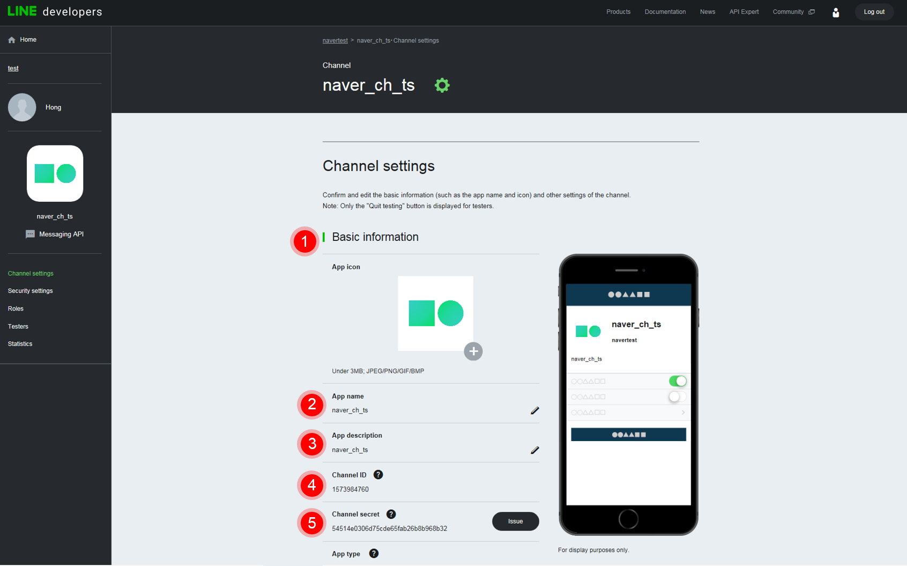 - Clova Chatbot 창의 메뉴에서 설정을 클릭합니다.
- 설정 화면에서 채널 탭을 클릭합니다.
- 채널 연동에서 LINE에 있는 설정을 클릭합니다.
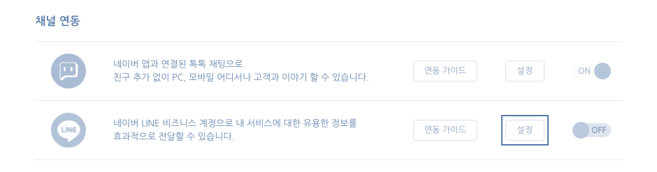 - 설정 대화 상자의 채널ID와 채널 Secret, Access Token에 LINE Developers에서 기록해 둔 Channel ID의 값과 Channel secret의 값, Channel access token의 값을 입력합니다.
- 저장을 클릭해 설정 내용을 적용합니다.
- LINE 연동을 사용하려면 LINE의 ON/OFF 상태를 ON으로 설정하고 저장을 클릭해 설정 내용을 적용합니다.